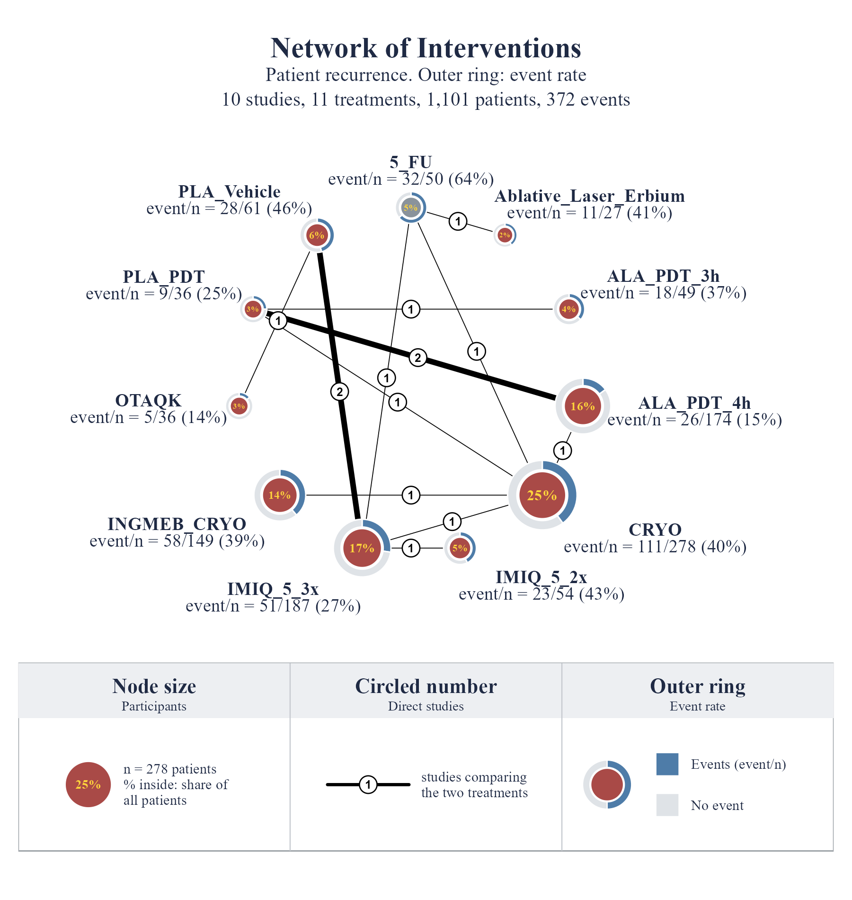

From an Excel sheet to a publication-ready network plot in three steps
# install once install.packages(c("remotes", "netmeta", "rstudioapi", "readxl")) remotes::install_github("vanioljantunes/nmaplots") # load every session library(nmaplots) library(netmeta) library(rstudioapi) library(readxl)
nmaplot()pairwise() and netmeta() fit the modelselectFile() opens a file pickerUpdating nmaplots in an open session? Run
unloadNamespace("nmaplots") before install_github(),
then library(nmaplots) again, so the new version is the one in use.
| study | treatment | responders | sampleSize |
|---|---|---|---|
| Author A 2006 | Drug_A | 11 | 27 |
| Author A 2006 | Placebo | 21 | 26 |
| Author B 2010 | Drug_B | 13 | 121 |
| Author B 2010 | Drug_C | 20 | 113 |
| Author B 2010 | Placebo | 3 | 19 |
| Author C 2014 | Drug_A | 58 | 149 |
| Author C 2014 | Drug_C | 73 | 140 |
studysame label on every arm of a trial (three rows = three-arm trial)
treatmentarm name; keep spelling identical across studies
respondersparticipants with the event (whole numbers)
sampleSizeparticipants randomised to the arm
Extra columns (year, dose, notes) are fine. Every study needs at least two arms, and all treatments must connect into one network.
# opens a file picker in RStudio myfile <- selectFile() # read every sheet into a list named ma sheet_names <- excel_sheets(myfile) ma <- lapply(sheet_names, function(x) as.data.frame(read_excel(myfile, sheet = x))) names(ma) <- sheet_names # choose the outcome sheet sheet <- select.list(sheet_names, title = "Which sheet?") d <- ma[[sheet]] # same as ma$rec_pat_all
# a. arm rows -> one row per comparison p <- pairwise(treat = treatment, event = responders, n = sampleSize, studlab = study, data = d, sm = "RR") # b. fit the network meta-analysis on p net <- netmeta(p) # c. draw it nmaplot(net, outcome = "Patient recurrence", layout = "multi", node_fill = "#A94A47", reference_fill = "#8A939B", ring_colors = c(Events = "#4E7CA8", "No event" = "#DFE3E7")) # d. save for the paper nmaplot(net, outcome = "Patient recurrence", file = "network.png", width = 10, height = 10.5, dpi = 300)
netmeta(p), not netmeta(d). Passing the sheet itself stops with
Non-numeric value for argument 'TE'."-0,684" reads as text. nma_clean(d) converts it;
nmaplot() also accepts pairwise rows directly.
outcome = "X""Patient recurrence". The line below it (studies, treatments,
patients, events) is added automatically; summary_line = FALSE hides it.
title changes "Network of Interventions".layout = "multi""multi" polygon (default), "circle" ordered by connections,
"star" reference in the centre (reference = "Placebo").node_fill, reference_fillnode_fill every treatmentreference_fill referencehighlight + highlight_colornode_fill = "auto" gives one colour per treatment from
palette. The % inside turns yellow on dark fills.ring_colorsEvents / "No event"c(Events = "#4E7CA8", "No event" = "#DFE3E7").
A custom ring (e.g. ring = table(d$treatment, d$design)) takes one colour
per group; ring = FALSE removes it.